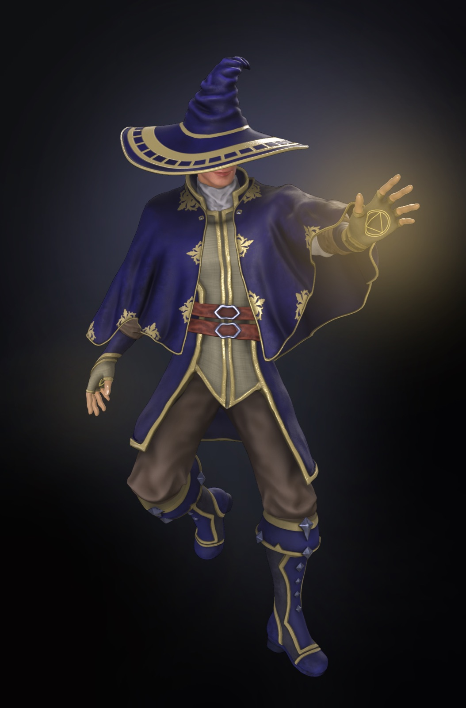

Engineering
Pipedrive — Junior Software Engineer
Subscription billing. One subscription can carry discounts, scheduled changes and a legacy plan at once, and every combination has to stay correct in the product, on the invoice and in the data warehouse.
I led a five-person cross-functional mission — product, design, engineering and a business lead at head-of-department level — that rebuilt how customers are picked into pricing experiments. Otherwise: a company-wide change to what each plan includes, and the seasonal discount campaigns. I took those from database migration through service and endpoint to the page.
I also wrote two Claude Code skills for my team, and the scripts that run the bulk billing operations at the end of every campaign.
Pipedrive — Software Engineering Intern
Six weeks rebuilding an internal tool from Vue into React as a micro-frontend inside the company's admin platform, from an empty repository. None of us had used the front-end stack before. I set the repo up on the plugin platform, built the table and detail views, wrote the typed data layer and added the component test suite.
The tool still runs two years later under a different team, with the components I wrote still in it. I joined permanently in January.
Selected work
-
A platform for pricing experiments
2026 · Kafka · Node · Amplitude · feature flagsPrice variants were picked at sign-up — before the data that excludes sales-assigned and partner-referred accounts exists.
- Four services, built end to end on my own. A Kafka consumer on a company-wide topic re-evaluates eligibility whenever that data changes
- Config map from experiment variant to feature flags, so exclusion rules change without a deploy
- Events can enable or disable a variant; the billing page can only enable
- Master flag switches off when a customer enters billing details, so a late event cannot move a committed price
Outcome: both experiments ran to a decision. The winner became the company’s new pricing baseline, and later rounds ran on the same platform.
-
A private endpoint for bulk add-on removal
2026 · Node · internal API designRemoving an add-on from thousands of subscriptions meant driving the general subscription endpoint, where the caller composes the whole subscription. Fine once, dangerous in a loop.
- Single-purpose private endpoint: company id, product code
- Closed enum of outcomes — removed, scheduled, never there — so a batch driver switches instead of parsing messages
- Per-dependency try/catch, log line and rethrow, so a failure names which dependency broke and still reaches the caller
Outcome: another engineer extended it for a different product two months later; a service from elsewhere in the company now calls it too.
-
Making a paid add-on free
2026 · Node · MySQL · cross-team launchAccess came from a feature flag on the package a company had bought. Making the add-on free meant re-deriving it from the plan, for every existing customer, without a gap.
- Entitlement moved onto plan features in one migration, the package-to-flag link removed in a second — in that order, so no customer lost access in between
- Each change shipped as a matched pair with the reconciliation service, which would otherwise have undone it
- Exception flags for companies that had to stay excluded, since a plan change recomputes entitlements from configuration, not current state
Outcome: both transition flags were retired within months. The old path was gone and the migration was done.
-
Seasonal revenue campaigns
2025–2026 · seven shipped · Node · MySQL · Redis · ReactOn the 2025 year-end campaign I owned the design and was engineering’s point of contact for the business side.
- Feature flags per offer, segment and plan tier, shipped dark then rolled out in staggered slots
- Migrations for the promotion rows, each with a JSON eligibility filter naming the flag that gates it, plus Redis cache-version bumps so existing customers pick them up
- Node script for teardown — a destructive bulk operation against live billing data, so it reads each account’s current discounts first, skips anything already expired or outside the campaign, and logs a reason per account rather than a count. ~4,000 removed across 30 production runs
- Redemptions measured with LogQL against production logs; the figure reconciled with marketing’s own
Bug found: the redemption validator nested the billing-cycle check inside the tier check, so a monthly-only discount could be redeemed by an annual customer.
Frontend
TypeScript · React · Redux Toolkit · React Query · micro-frontends
Backend
Node.js · Fastify · REST APIs · MySQL · Apache Kafka · Docker
Graphics & Games
Godot 4 · GDShader / GLSL · C++ / raylib · Blender · Maya · TrenchBroom
Practice
Feature flags · gradual rollout · production support · Jest, Cypress · CI/CD · AI-assisted development
Projects
Dwarf Escape
A first-person platformer set in a dwarven mine — a pickaxe jump, a grappling hook, and a timer running in the corner. I made the environment art and the materials: the cave and architecture geometry, the tileable rock and brick textures, and the lava that lights most of the level.
We showcased it twice at game-dev expo events and ran tournaments on it.


Wolf-Hunter
A 2D action game written directly on raylib, with no engine underneath. Everything is hand-rolled: tile collision, enemy state machines, two weapon systems with combo timers and projectiles, a dodge roll with invulnerability frames, and binary save/load. The art and the Tiled maps are mine too.
It is the project where I found out what an engine actually does for you, by not having one.
3D art
Four years of 3D alongside everything else. Hard-surface modelling and sculpting, UV unwrapping, baking, and texturing — both hand-painted and realistic PBR. These are personal pieces rather than game assets.



Small Projects
-
Bubble Wizard
January 2025 · Global Game Jam Tallinn · 3rd placeA first-person roguelike shooter. Kill enemies, pick up the experience they drop, and every level-up hands you an upgrade. Made over a weekend in Godot with a five-person team.
-
Spectre
March 2025 · TalTech Spring Game Jam · GodotA short first-person puzzle game. You wake up sharing your body with a ghost, and it will not leave until you find the family relics scattered through its old manor. Made over a weekend with a five-person team.